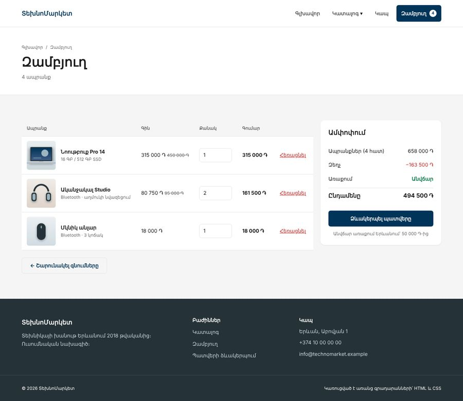
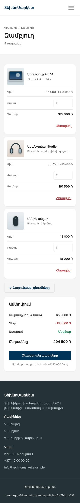
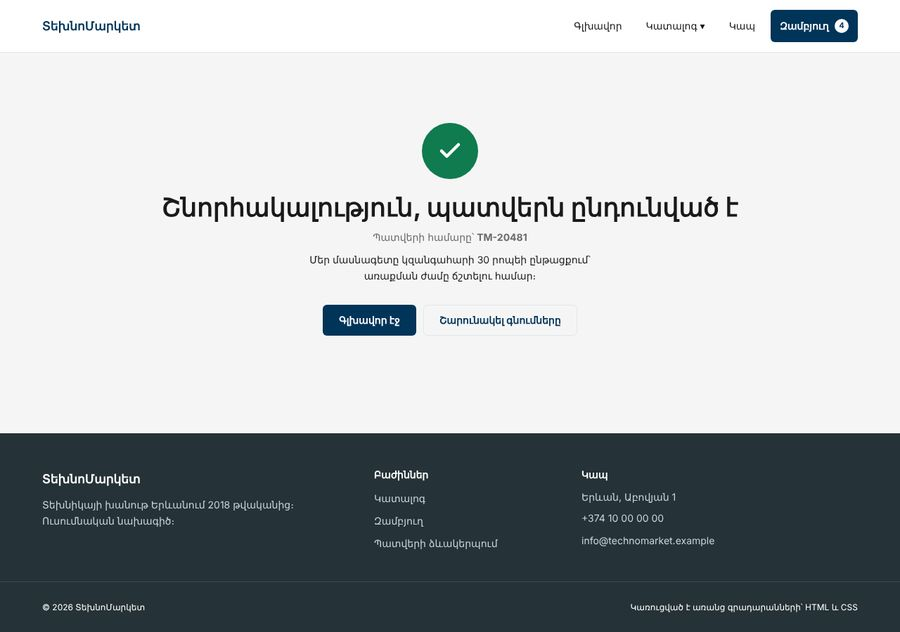
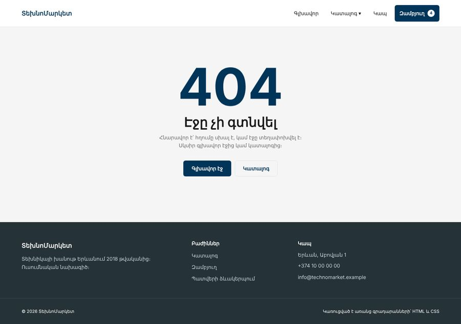
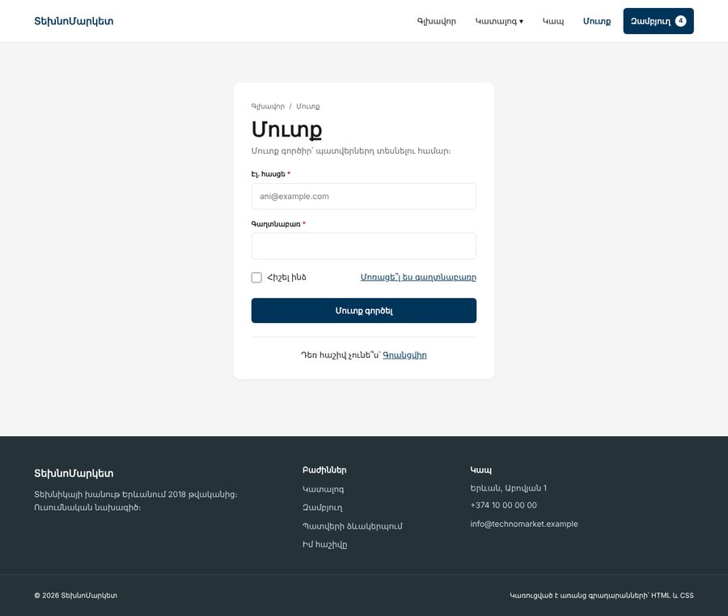
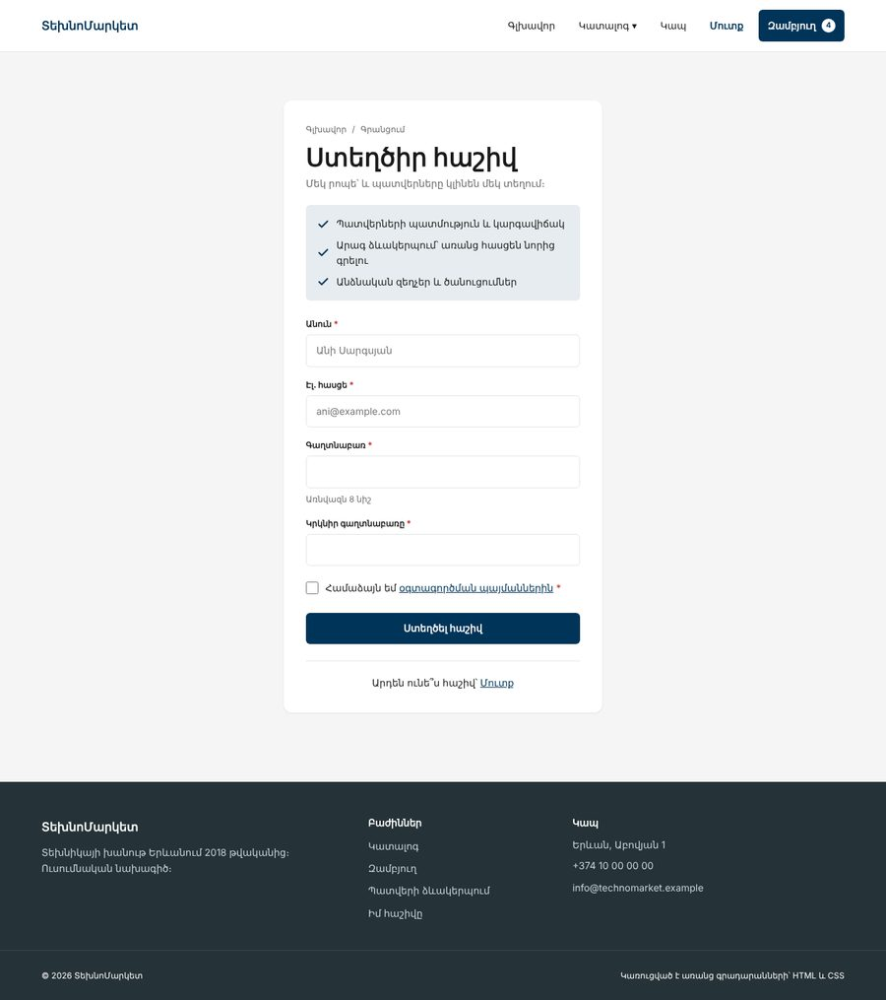
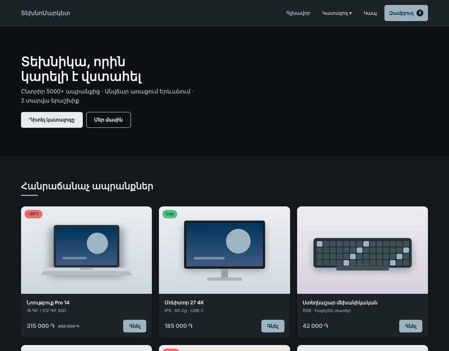

Առաջադրանք 3 / 3 · Դաս 23 → Դաս 24 · տնային, մեկ շաբաթ
Ապրանք, զամբյուղ, պատվեր, 404
Գլխավոր էջը և կատալոգը պատրաստ են և հրապարակված։ Հիմա կայքը դարձնում ենք ամբողջական խանութ՝ ևս հինգ էջով։ Ամեն էջը վերցնում է 01–23 դասերից մի թեմա, որը մինչ այժմ նախագծում չէր օգտագործվել․ աղյուսակներ, ամբողջական ֆորմաներ, անիմացիաներ, թեմաներ։ Ավարտելուց հետո համեմատիր օրինակ 2-ի հետ։
00Ինչ պետք է ստացվի
| Էջ | Ֆայլ | Նոր թեման նախագծում | Դաս |
|---|---|---|---|
| Ապրանքի էջ | product.html | Պատկերասրահ, բնութագրերի աղյուսակ | 3, 16, 20 |
| Զամբյուղ | cart.html | Աղյուսակ, որը հեռախոսում դառնում է քարտեր | 3, 9, 14 |
| Պատվերի ձևակերպում | checkout.html | Ամբողջական ֆորմա՝ fieldset, radio, select, textarea, autocomplete | 4, 6, 20 |
| Շնորհակալություն | thanks.html | Կարգավիճակի էջ, անիմացիա | 21 |
| 404 | 404.html | Սխալի էջ, որը GitHub Pages-ը ցույց է տալիս ինքնաշխատ | 21, 23 |
| Մուտք | login.html | Կարճ ֆորմա քարտի մեջ, type="password", autocomplete | 4, 8, 11 |
| Գրանցում | register.html | Գրանցման ֆորմա, minlength, հուշում aria-describedby-ով | 4, 5, 17 |
| Բոնուս | main.css | Մուգ թեմա՝ prefers-color-scheme-ով | 19 |








01Շաբաթվա պլան
| Օր | Ինչ ես անում | Մոտավոր ժամ |
|---|---|---|
| 1 | Ապրանքի էջ | 2 |
| 2 | Զամբյուղ՝ համակարգչի և հեռախոսի տարբերակներով | 2 |
| 3–4 | Պատվերի ձևակերպում | 3 |
| 5 | Շնորհակալություն, 404, մուտք և գրանցում, components.html-ի թարմացում | 2.5 |
| 5 | Շնորհակալություն, 404, components.html-ի թարմացում | 1.5 |
| 6 | Ամբողջ կայքի ստուգում (բաժին 05), README, նոր հրապարակում, բոնուսը՝ եթե ժամանակ կա | 1.5 |
| Դաս 24 | Պաշտպանություն (բաժին 06) | — |
Ամեն էջից հետո՝ git add ., git commit -m "Ապրանքի էջ", git push (Դաս 23)։ Պաշտպանության ժամանակ commit-ների պատմությունը ցույց է տալիս, թե ինչպես է աշխատանքն առաջ գնացել։
02Քայլեր
Ամեն նոր էջ սկսիր catalog.html-ի պատճենից․ head-ը, header-ը և footer-ը արդեն պատրաստ են։ Փոխիր title-ը, description-ը և aria-current-ը, իսկ main-ը կառուցիր նորից։
Քայլ 1 · Ապրանքի էջ
- Փշրանքներ չորս մակարդակով․ Գլխավոր / Կատալոգ / Նոութբուքեր / Նոութբուք Pro 14։ Վերջինը հղում չէ, այլ
li aria-current="page" - Երկու սյուն՝
w-50 w-md-100։ Ձախում մեծ նկարը և չորս փոքր նկար Grid-ով (repeat(4, 1fr), Դաս 20)։ Առաջինն ընդգծված է եզրագծով - Մեծ նկարը էջի վերևում է, ուստի նրան չի պետք
loading="lazy"(Դաս 16) - Պիտակ «-30%»։ Քարտի
.card__badge-ըabsoluteէ, իսկ այստեղ պիտակը հոսքում է։ Ստեղծիր.badge՝ նույն տեսքով, առանց դիրքավորման - Քանակի ֆորմա՝
action="cart.html",input type="number"՝min="1"ևmax="10" - Առավելությունների ցուցակ՝ նույն երեք SVG պատկերակով, ինչ գլխավոր էջում,
stroke-ը՝ ակցենտի գույնով - Բնութագրերի աղյուսակ․
caption(կարող է լինել.visually-hidden), ամեն տողի անունը՝th scope="row", կենտ տողերը՝:nth-child(odd)ֆոնով (Դաս 3) - «Նման ապրանքներ»՝ երեք քարտ նույն
.cardկոմպոնենտով
Փոքր նկարները սեղմելի չեն, և դա ճիշտ է․ առանց JavaScript-ի մեծ նկարը փոխել չենք կարող։ Մի՛ դարձրու դրանք հղումներ կամ կոճակներ, որոնք ոչինչ չեն անում։ Գրիր սա README-ի «Հայտնի սահմանափակումներ» բաժնում։
Քայլ 2 · Զամբյուղ
- Էջի գլուխ՝ փշրանքներով, h1 «Զամբյուղ» և «4 ապրանք»
- Երկու սյուն՝
w-70աղյուսակի ևw-30ամփոփման համար։ Ամփոփումըposition: stickyէ՝ ոլորելիս մնում է տեսադաշտում (Դաս 15) - Աղյուսակ՝
caption,theadհինգth scope="col"-ով,tbodyերեք տողով։ Վերջին սյան վերնագիրը տեսողականորեն թաքնված է, բայց կա - Ամեն քանակի դաշտ ունի իր
label-ը՝ «Քանակ՝ Նոութբուք Pro 14»։ Սյան վերնագիրը չի փոխարինում label-ին - «Հեռացնել»-ը
button type="button"է։ Էկրանընթերցիչը պետք է իմանա, թե որ ապրանքն է հեռացնում․ ավելացրու անունը.visually-hiddenspan-ով - Ամփոփման թվերը ստուգիր հաշվիչով։
content.md-ում կա ստուգման տողը
Հեռախոսում հինգ սյուն չի տեղավորվի։ Աղյուսակը դարձրու քարտեր՝ փոխելով միայն display-ը (Դաս 9)․
/* Վերնագրերը թաքնված են տեսողականորեն, բայց մնում են էկրանընթերցիչի համար */
.cart-table thead {
position: absolute;
width: 1px;
height: 1px;
overflow: hidden;
clip-path: inset(50%);
}
/* Աղյուսակի տարրերը դառնում են սովորական բլոկներ */
.cart-table,
.cart-table tbody,
.cart-table tr,
.cart-table td { display: block; }
.cart-table td {
display: flex;
justify-content: space-between;
}
/* Համակարգչում թաքնված պիտակները՝ «Գին», «Քանակ», «Գումար» */
.cell-label { display: inline; }Կարող էիր գրել աղյուսակ համակարգչի համար և քարտեր հեռախոսի համար, իսկ մեկը թաքցնել։ Բայց այդ դեպքում ամեն ապրանք կլիներ HTML-ում երկու անգամ, և JS բլոկում պետք կլիներ թարմացնել երկու տեղ։ Մեկ HTML, երկու դասավորություն․ սա է Դաս 14-ի գաղափարը։
Քայլ 3 · Պատվերի ձևակերպում
- Մեկ
form՝action="thanks.html",method="get" - Երեք խումբ, ամեն մեկը՝ սպիտակ քարտի ներսում․
div.form-section > fieldset > legend։ Fieldset-ի բրաուզերային եզրագիծը և padding-ը զրոյացրու - Դաշտերը՝ երկու սյունով Grid-ով։ Լայն դաշտերը (էլ. հասցե, մեկնաբանություն)՝
grid-column: 1 / -1(Դաս 20)։ 576px-ից ներքև՝ մեկ սյուն - Ամեն դաշտ՝
label+input, ճիշտtype(tel,email) ևautocomplete(աղյուսակը՝content.md-ում) - Պարտադիր դաշտերը՝
required։ Աստղանիշը (*)aria-hidden="true"է, որովհետև էկրանընթերցիչն արդեն ասում է «պարտադիր» - Առաքումը և վճարումը՝ radio-ներ ընտրության քարտերի տեսքով։ Ընտրված քարտը ընդգծվում է առանց JavaScript-ի․
<label class="choice">
<input type="radio" name="delivery" value="courier" checked>
<span class="choice__body">
<strong>Առաքում Երևանում</strong>
<span>Վաղը · անվճար</span>
</span>
</label>
.choice { position: relative; }
.choice input { position: absolute; top: 18px; left: 16px; }
.choice__body { padding-left: 46px; border: 1px solid var(--border); }
/* radio-ից ՀԵՏՈ եկող span-ը — հարևան սելեկտոր, Դաս 6 */
.choice input:checked + .choice__body { border-color: var(--accent); }
.choice input:focus-visible + .choice__body { outline: 2px solid var(--accent); }1. Սեղմիր «Հաստատել»՝ դաշտերը դատարկ թողնելով։ Բրաուզերը չի ուղարկի ֆորման և ցույց կտա, թե որ դաշտն է պակասում։ Սա required-ի աշխատանքն է։
2. Լրացրու ամեն ինչ և ուղարկիր։ Նայիր thanks.html-ի հասցեին․ քո անունը, հեռախոսը և հասցեն երևում են այնտեղ։ Սա է GET-ի խնդիրը անձնական տվյալների համար։ Իրական խանութում ֆորման ուղարկվում է POST-ով սերվերին․ դա կանենք PHP բլոկում։ Գրիր սա README-ում։
Քայլ 4 · Շնորհակալություն և 404
- Երկու էջն էլ օգտագործում են մեկ կոմպոնենտ՝
.status․ կենտրոնացված բովանդակություն, վերնագիր, տեքստ, երկու կոճակ - 404-ի մեծ թիվը՝
clamp()-ով (Դաս 14) և հանգիստ «լողացող» անիմացիայով@keyframes-ով։ Թիվը դեկորատիվ է՝aria-hidden="true", իսկ իմաստը h1-ում է - Շնորհակալության էջի կանաչ նշանը հայտնվում է
scaleանիմացիայով (Դաս 21)։ Ստուգիր, որprefers-reduced-motion-ը անջատում է այն - Կարճ էջում footer-ը չպետք է «բարձրանա» էկրանի մեջտեղ։
body-ին՝display: flex,flex-direction: column,min-height: 100vh, իսկmain-ին՝flex-grow: 1(Դաս 7, 11) - Հրապարակելուց հետո բացիր գոյություն չունեցող հասցե, օրինակ՝
…/technomarket/abc։ GitHub Pages-ը ինքն է ցույց տալիս404.html-ը
Քայլ 5 · Մուտք և գրանցում
Երկու էջն էլ մեկ կոմպոնենտ են՝ .auth__card․ նեղ սպիտակ քարտ էջի կենտրոնում։ Մուտքի և գրանցման կոճակները դեռ ոչինչ չեն անում, որովհետև գաղտնաբառը ստուգելու համար պետք է սերվեր։ Բայց markup-ը պատրաստում ենք հիմա, և PHP Դաս 16-ում այն կաշխատի առանց փոփոխության։
- Header-ում՝ նոր կետ «Մուտք»՝
login.html։ Երկու էջում էլ այն նշված էaria-current-ով։ Footer-ում՝ «Իմ հաշիվը»։ Մի մոռացիր թարմացնել header-ը և footer-ը բոլոր էջերում - Քարտը՝
max-width: 460pxևmargin-inline: auto(Դաս 8)։ Լայն ֆորման դժվար է կարդալ, իսկ նեղը՝ կենտրոնում, անմիջապես ցույց է տալիս, որ էջում մեկ գործողություն կա - Ֆորման՝
action="#",method="post"։ Ի տարբերություն պատվերի ֆորմայի, այստեղGETչենք օգտագործում նույնիսկ ուսումնական նախագծում, որովհետև գաղտնաբառը կհայտնվեր հասցեում և բրաուզերի պատմության մեջ - Դաշտերի
name-երը՝name,email,password,password_confirmation,remember,terms։ Սրանք նույնն են, ինչ PHP Դաս 16-ում autocomplete՝ մուտքումcurrent-password, գրանցման երկու դաշտում՝new-password։ Այդ դեպքում բրաուզերը առաջարկում է պահված գաղտնաբառը մուտքում և ուժեղ գաղտնաբառ՝ գրանցման ժամանակ- Գրանցման գաղտնաբառը՝
minlength="8", իսկ «Առնվազն 8 նիշ» հուշումը կապված է դաշտինaria-describedby-ով (Դաս 5)։ Էկրանընթերցիչը այն կկարդա դաշտը ֆոկուսելիս - «Հիշել ինձ» նշիչը և «Մոռացե՞լ ես գաղտնաբառը» հղումը՝ մեկ տողում,
justify-content: space-betweenևflex-wrap(Դաս 11)։ Նեղ էկրանում հղումը իջնում է ներքև - Գրանցման առավելությունների ցանկը՝
ul, իսկ նշանները՝ նույն SVG-ն, որ շնորհակալության էջում է,aria-hidden="true"-ով (Դաս 16)
<div class="field">
<label for="password" class="field__label">Գաղտնաբառ <span class="req" aria-hidden="true">*</span></label>
<input id="password" name="password" type="password" class="input"
autocomplete="new-password" minlength="8"
aria-describedby="password-hint" required>
<span id="password-hint" class="field__hint">Առնվազն 8 նիշ</span>
</div>1. Գրանցման ֆորմայում գրիր 5 նիշանոց գաղտնաբառ և ուղարկիր։ Բրաուզերը կասի, որ քիչ է։ Իսկ եթե երկու գաղտնաբառը տարբեր են, ֆորման կուղարկվի․ HTML-ը չի կարող համեմատել երկու դաշտ։ Դա կանենք JS բլոկում, իսկ իսկական ստուգումը՝ PHP-ում։
2. DevTools-ում ջնջիր minlength-ը և ուղարկիր նույն 5 նիշը։ Ֆորման գնաց։ Ահա թե ինչու բրաուզերի ստուգումը օգտագործողի հարմարության համար է, ոչ պաշտպանության։ Գրիր սա README-ի սահմանափակումներում։
Քայլ 6 · Բոնուս՝ մուգ թեմա
=======Քայլ 5 · Բոնուս՝ մուգ թեմա
>>>>>>> 8e6b3b82ff6462d765102b8c5f51eaffc32a6f12Եթե Դաս 19-ի երկու շերտի տոկենները ճիշտ ես կառուցել, մուգ թեման մեկ media query է, որի ներսում փոխվում են միայն իմաստային տոկենները։ Կոմպոնենտներին ձեռք չես տալիս։

| Խնդիր | Լուծում |
|---|---|
| Կոճակի սպիտակ տեքստը բաց ակցենտի վրա չի կարդացվում | Նոր իմաստային տոկեն՝ --on-accent․ լուսավոր թեմայում սպիտակ, մուգում՝ մուգ կապույտ։ .btn-ը օգտագործում է այն, ոչ --on-dark-ը |
| «Բաց» կոճակի տեքստը մուգ թեմայում նույնպես բացվում է | Այդ կոճակի ֆոնը միշտ բաց է, ուստի տեքստի գույնը վերցրու գունապնակից (--slate-800), ոչ իմաստային --text-ից |
| Input-ները և select-ը մնում են սպիտակ | :root { color-scheme: dark; } մուգ թեմայի ներսում (Դաս 19) |
| Կոնտրաստը չի բավականացնում | Ստուգիր ամեն զույգ DevTools-ով (≥ 4.5:1)՝ նույնը, ինչ լուսավոր թեմայում |
Դաս 19-ի checkbox-անջատիչը աշխատում է մեկ էջի ներսում։ Մյուս էջ անցնելիս ընտրությունը կորչում է, որովհետև այն պահելու համար պետք է JavaScript։ Ուստի այստեղ թեման հետևում է համակարգի կարգավորմանը։ Ձեռքով անջատիչը՝ JS բլոկում։
Քայլ 7 · Ավարտ
- Բոլոր նոր կոմպոնենտները (
.badge, աղյուսակ, ընտրության քարտ, ֆորմայի դաշտ,.auth__card) ավելացրուcomponents.html-ում (Դաս 17) - Թարմացրու README-ն՝ էջերի աղյուսակով և նոր սահմանափակումներով
- Հրապարակիր նորից և ստուգիր բոլոր 9 էջը իրական հեռախոսում =======
- Բոլոր նոր կոմպոնենտները (
.badge, աղյուսակ, ընտրության քարտ, ֆորմայի դաշտ) ավելացրուcomponents.html-ում (Դաս 17) - Թարմացրու README-ն՝ էջերի աղյուսակով և նոր սահմանափակումներով
- Հրապարակիր նորից և ստուգիր բոլոր 7 էջը իրական հեռախոսում >>>>>>> 8e6b3b82ff6462d765102b8c5f51eaffc32a6f12
Քայլ 6 · Ավարտ
03Հաճախ հանդիպող սխալներ
| Սխալ | Ինչպես ուղղել |
|---|---|
| Header-ը մի էջում տարբերվում է մյուսներից | Մի էջում փոփոխել ես, մյուսներում՝ ոչ։ Ամեն փոփոխությունից հետո պատճենիր header-ը բոլոր 9 էջում։ JS և PHP բլոկներում սա կլուծվի մեկ ֆայլով |
| Header-ը մի էջում տարբերվում է մյուսներից | Մի էջում փոփոխել ես, մյուսներում՝ ոչ։ Ամեն փոփոխությունից հետո պատճենիր header-ը բոլոր 7 էջում։ JS և PHP բլոկներում սա կլուծվի մեկ ֆայլով |
| Ամփոփումը sticky չէ | sticky-ը շարժվում է միայն իր ծնողի ներսում։ Եթե .row-ին տվել ես align-start, սյունը նույն բարձրությունն ունի, ինչ ամփոփումը, և շարժվելու տեղ չկա։ Հանիր align-start-ը, որ սյունը ձգվի։ Ստուգիր նաև, որ ծնողներից ոչ մեկը չունի overflow: hidden (Դաս 15) |
| Legend-ը նստած է քարտի եզրին | Legend-ը միշտ fieldset-ի եզրագծի վրա է։ Քարտի ֆոնը և padding-ը տուր դրսի div-ին, իսկ fieldset-ը զրոյացրու |
| Radio-ի քարտը չի ընդգծվում | + սելեկտորն աշխատում է միայն անմիջապես հետո եկող տարրի համար։ Input-ը պետք է լինի span-ից առաջ, նույն ծնողի ներսում |
| Զամբյուղի քարտերում «Գին» պիտակը երևում է նաև համակարգչում | .cell-label { display: none } հիմնական CSS-ում, display: inline՝ միայն media query-ի ներսում |
| 404 էջում նկարները և CSS-ը չեն բեռնվում ենթաթղթապանակի հասցեում | Հարաբերական ուղիները հաշվվում են ընթացիկ հասցեից։ Մեր նախագծի համար սա ընդունելի է․ գրիր այն README-ում |
04Ինչպես համեմատել օրինակի հետ
product · cart · checkout · thanks · 404 · login · register · components
=======
product · cart · checkout · thanks · 404 · components
>>>>>>> 8e6b3b82ff6462d765102b8c5f51eaffc32a6f12
1. Զամբյուղը 375px-ում. համեմատիր քո քարտերը օրինակի հետ։ Քանի՞ տող CSS է պետք եղել քեզ։
2. Ֆորման ստեղնաշարով. անցիր ամբողջ պատվերի ֆորման միայն Tab-ով, Space-ով և սլաքներով։ Radio-ների խմբում սլաքները փոխում են ընտրությունը։
3. Մուգ թեման. միացրու երկու կայքում։ Քանի՞ տոկեն է փոխվել օրինակում (main.css, բաժին 11), և քանի՞սը՝ քոնում։
05Ամբողջ կայքի ընդունում
Էջեր
-
<<<<<<< HEAD
- Կա 9 էջ, բոլոր հղումները աշխատում են, ոչ մի
href="#"չի մնացել, բացի «պայմաններից» և «Մոռացե՞լ ես գաղտնաբառը»-ից
=======
- Կա 7 էջ, բոլոր հղումները աշխատում են, ոչ մի
href="#"չի մնացել, բացի «պայմաններից»
>>>>>>> 8e6b3b82ff6462d765102b8c5f51eaffc32a6f12
- Header-ը և footer-ը նույնն են ամեն էջում, ակտիվ էջը նշված է
aria-current-ով - Ամեն էջ ունի իր
title-ը ևdescription-ը
Աղյուսակներ և ֆորմաներ
- Աղյուսակներն ունեն
captionևscope - Զամբյուղը հեռախոսում քարտեր է, առանց HTML-ի կրկնության
- Ֆորմայի ամեն դաշտ ունի
label,name, ճիշտtypeևautocomplete - Պարտադիր դաշտերը չեն թողնում ուղարկել դատարկ ֆորման <<<<<<< HEAD
- Գաղտնաբառի դաշտերը՝
type="password", ճիշտautocomplete-ով, իսկ ֆորման՝method="post"
=======
>>>>>>> 8e6b3b82ff6462d765102b8c5f51eaffc32a6f12
Որակ
- Բոլոր էջերը՝ 320px-ից 1920px, առանց հորիզոնական սքրոլի
- Բոլոր էջերն անցնելի են
Tab-ով, ֆոկուսը միշտ տեսանելի է - Անիմացիաները անջատվում են
prefers-reduced-motion-ով - Lighthouse Accessibility ≥ 90 ամեն էջում
- README-ն նկարագրում է բոլոր էջերը և սահմանափակումները
06Պաշտպանություն · Դաս 24
Ամեն ուսանողին՝ 5 րոպե ներկայացում և 3 րոպե հարցեր։
| Ինչ ցույց տալ | Րոպե |
|---|---|
| Կայքը հրապարակված հղումով՝ 1280px-ում, հետո 375px-ում՝ բուրգերով | 2 |
| Մեկ որոշում, որով հպարտ ես, և ինչու ես այդպես արել | 1 |
| Մեկ սահմանափակում README-ից և ինչպես այն կլուծվի JS կամ PHP բլոկում | 1 |
| Պատվերի ֆորման՝ միայն ստեղնաշարով | 1 |
Հնարավոր հարցեր
- Ինչու՞ է dropdown-ը թաքնված
visibility-ով, ոչdisplay: none-ով - Ինչու՞
aria-current, ոչ.activeդաս - Ինչո՞վ է տարբերվում
global.css-ըmain.css-ից - Ինչու՞ է պատվերի ֆորման
GET-ով, և ինչու՞ է դա վատ իրական խանութի համար
<<<<<<< HEAD
- Ինչու՞ մուտքի ֆորման
GET-ով չենք ուղարկում նույնիսկ ուսումնական նախագծում
=======
>>>>>>> 8e6b3b82ff6462d765102b8c5f51eaffc32a6f12
- Ինչպե՞ս է զամբյուղի աղյուսակը դառնում քարտեր, և ինչու՞ չես գրել երկու HTML
Գնահատում
| Չափանիշ | Միավոր |
|---|---|
| Սեմանտիկ HTML, աղյուսակներ, ֆորմաներ | 20 |
| CSS համակարգ՝ տոկեններ, կոմպոնենտներ, կրկնություն չկա | 20 |
| Ադապտիվություն 320–1920px | 20 |
| Հասանելիություն՝ ստեղնաշար, կոնտրաստ, label-ներ | 20 |
| Հրապարակում, README, commit-ների պատմություն | 10 |
| Պաշտպանություն և պատասխաններ | 10 |
| Ընդամենը (բոնուս՝ մուգ թեմա, +5) | 100 |
Այս ինը էջը JS բլոկում կենդանանում են․ ֆիլտրերը կֆիլտրեն, զամբյուղը կհաշվի, ֆորմաները կստուգվեն մինչ ուղարկելը։ PHP բլոկում դրանք կդառնան իրական խանութ՝ տվյալների բազայով, իսկ մուտքն ու գրանցումը կաշխատեն իսկապես (PHP Դաս 16)։ Markup-ը կմնա քոնը։
=======Այս յոթ էջը JS բլոկում կենդանանում են․ ֆիլտրերը կֆիլտրեն, զամբյուղը կհաշվի, ֆորման կստուգվի մինչ ուղարկելը։ PHP բլոկում դրանք կդառնան իրական խանութ՝ տվյալների բազայով։ Markup-ը կմնա քոնը։
>>>>>>> 8e6b3b82ff6462d765102b8c5f51eaffc32a6f12